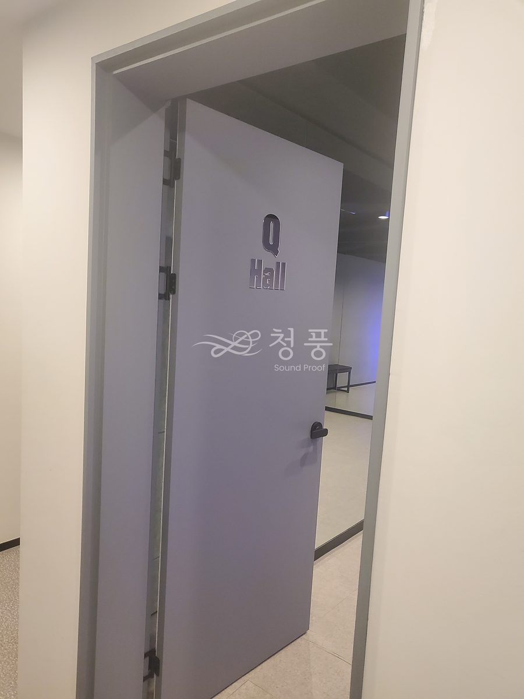
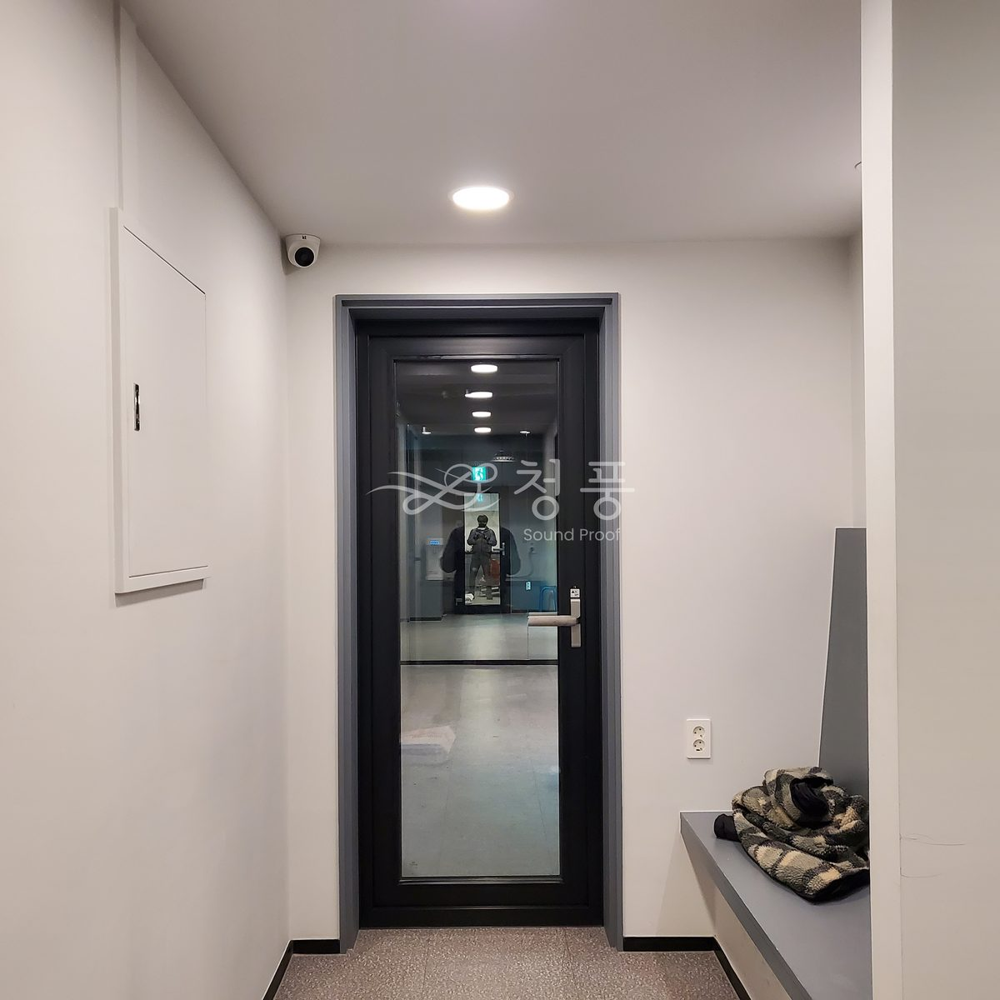
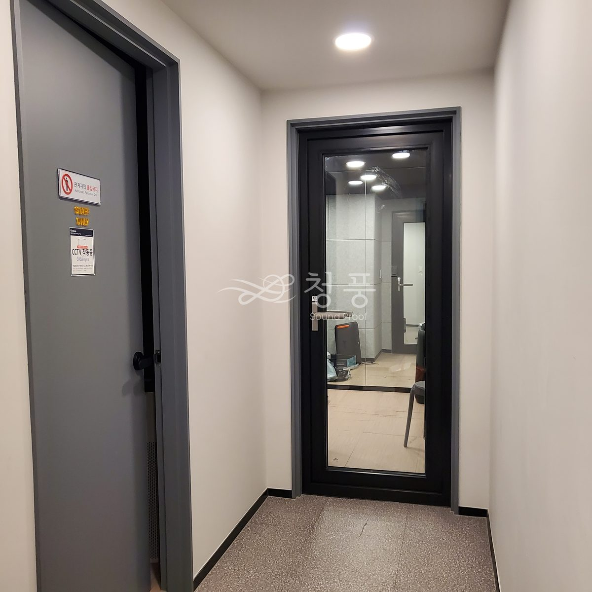
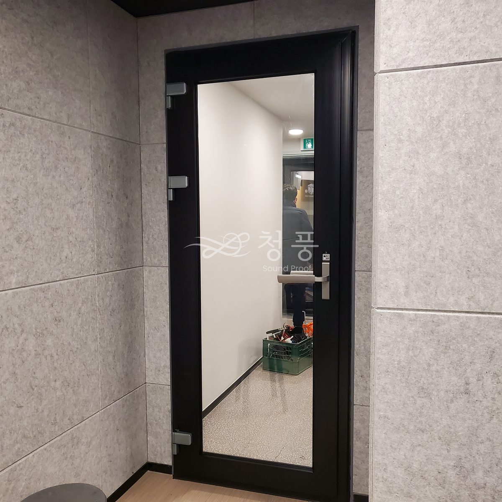
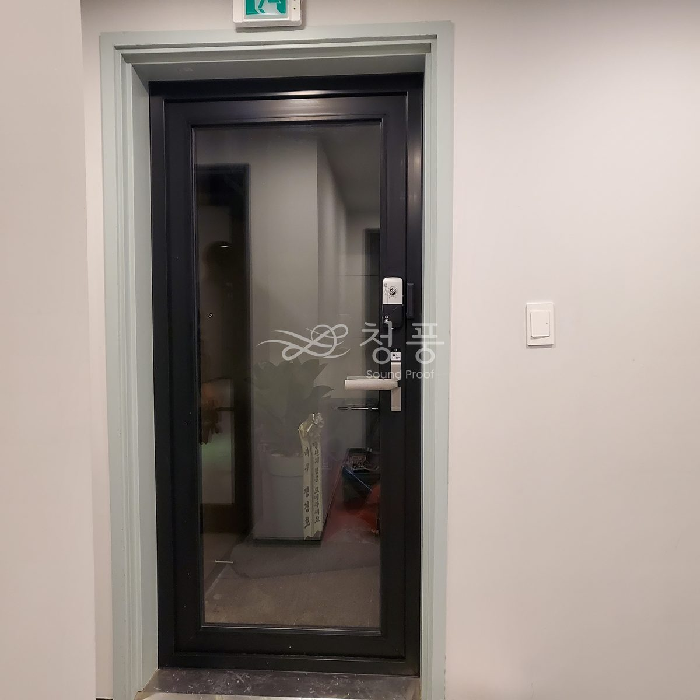
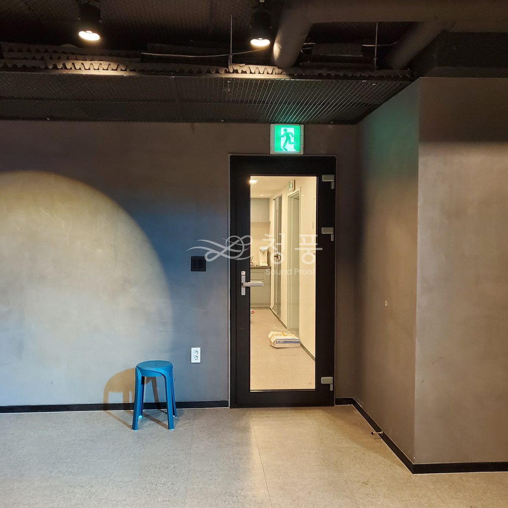

서울 동작 사당동 · 댄스 스튜디오
연습홀 세 칸과 주 출입문, 모두 네 곳의 문을 23T 시스템 방음문으로 바꿨습니다. 주 출입문은 기존 방화문틀을 살려 그 자리에 방음문을 넣었습니다. 프레임은 스튜디오 분위기에 맞춰 흑색으로 했습니다.






문의
010-4867-4442
실측과 상담은 비용을 받지 않습니다. 방음문 한 짝 교체는 99만원부터이고, 기존 문 철거는 별도입니다.
상담부터 시공까지 보통 2~3주.
상담 → 실측 → 제작 → 일정 조율 → 시공 순서로 갑니다.
방음문은 치수를 받아 만드는 제품이라 대부분의 시간이 제작 기간입니다.